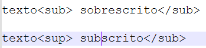
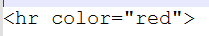
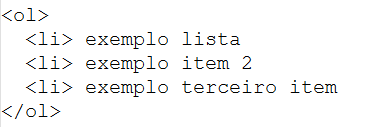
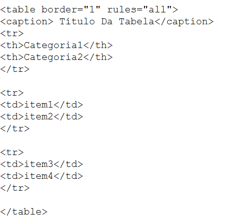

Na presente página, ensinarei 5 comandos (TAGS) HTML, será apresentado o comando e sua função, e disponibilizado um link para uma página contendo os exemplos.
COMANDO N1: Tag de texto sobrescrito e subscrito.

Em palavras ou fórmulas, é comum ver pequenos textos abaixo ou em cima da linha padrão,
(como a fórmula da água, ou a função logarítma)
Para isso, basta voce abrir e fechar a tag mostrada acima, antes e depois da palavra que deseja subescrever ou sobescrever.
COMANDO N2: Tag hr.

hr significa horizontal role; como diz o nome, cria uma linha horizontal na página.
Esta possui diferentes atributos para alterar o comportamento da linha, como width (largura), color (cor da linha) entre outros.
Ao escrever conforme o exemplo acima, a página ficará marcada com uma linha vermelha.
COMANDO N3: Lista Ordenada.

Para criar uma lista ordenada, basta abrir a tag OL (ordered list) e, para cada tópico, iniciar com a tag Li.
Ao finalizar a lista, basta fechar a tag OL.
Esta lista por padrão, deixara cada item numerado na ordem 1,2,3.
COMANDO N4: Texto tachado.

Para deixar alguma parte ou palavra com uma linha no meio (tachada) basta abrir a tag "del" antes da palavra em questão, e fechar em seguida.
COMANDO N5: Tabelas.

Uma das maneiras simples de marcar uma tabela em html, é usando as tags >table, caption, tr, th e td.
table é a tag que vai determinar onde começa e onde termina a tabela;
caption é onde voce deve escrever o assunto daquela tabela;
tr (table row) é a linha da tabela, deve abrir e fechar, para depois por uma nova.
th (table heading) é o texto destacado que vai ficar como categoria de cada coluna, deve ser inserido entre as tags tr.
td (table data) é a informação que também fica entre as tags tr, com o texto, por padrão sem destaque, dentro de cada célula.
dica: para deixar com um aspecto melhor, deixe a tag table com os atributos rules="all" e border="1"